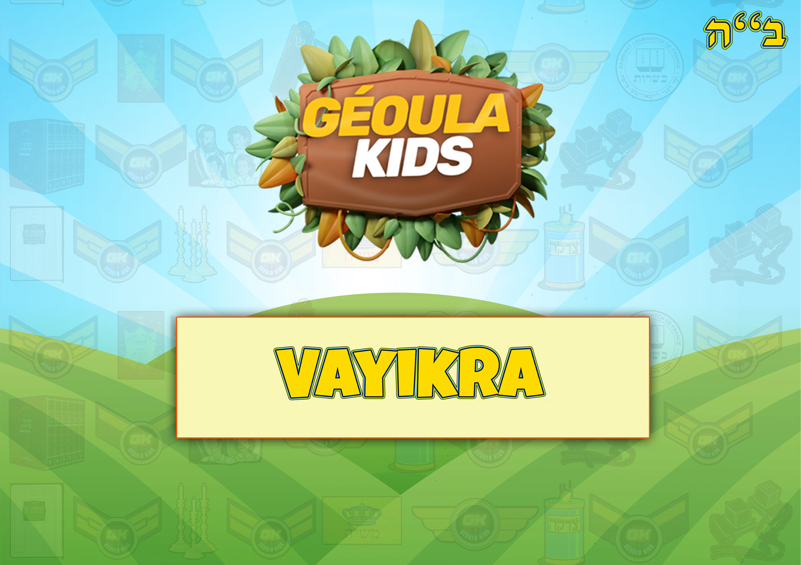
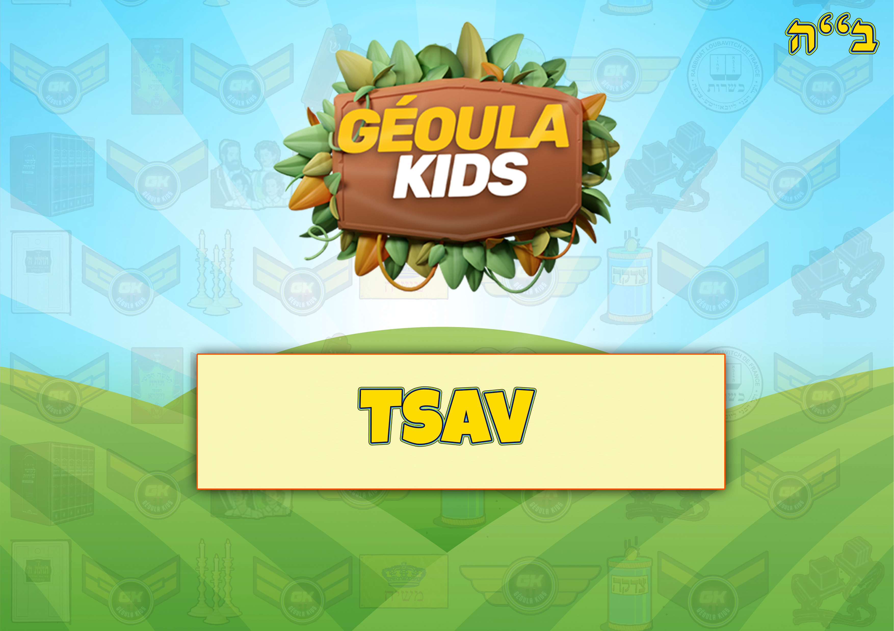
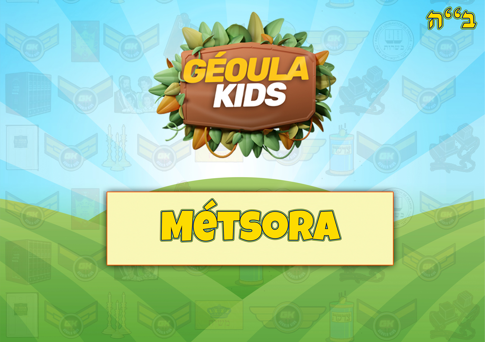
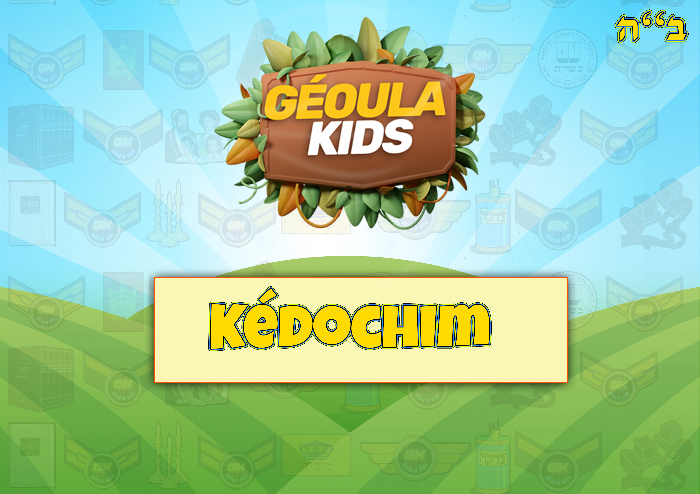
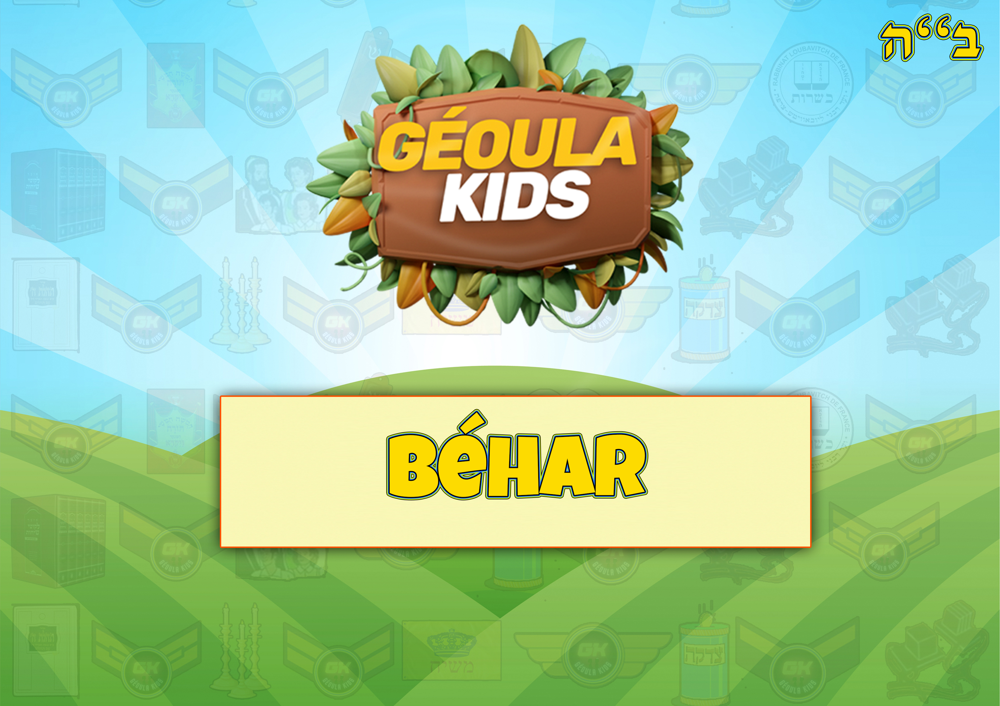
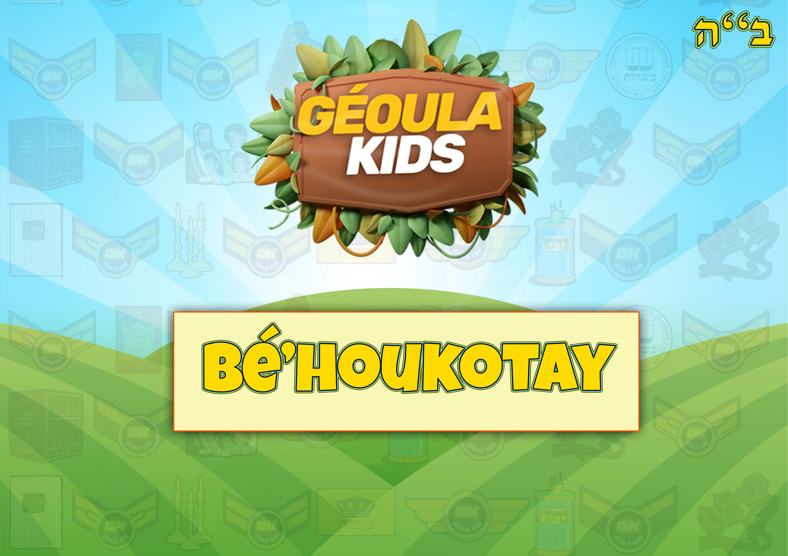

Accueil
Missions Géoulatik
Tirages passés
Tirages à venir
Jeux par Séfér
Béréchit
Chémot
Vayikra
Bamidbar
Dévarim
Feuillets Hébdomadaires
Béréchit
Chémot
Vayikra
Bamidbar
Dévarim
Les Histoires de Moré Yoni
Le Baal Chem Tov
Le Maguid de Mézéritch
Le Noam Élimélé'h
Rabbi Zoucha de Anipoly
Rabbi Yaacov Yosséf
Activités
Fêtes
Learn & Kiff
Mon compte
La Paracha de Vayikra

La Paracha de Tzav

La Paracha de chemini
La Paracha de Tazria
La Paracha de Metzora

La Paracha de Aharei Mot
La Paracha de Kedoshim

La Paracha de Emor
La Paracha de Behar

La Paracha de Bechoukotay
